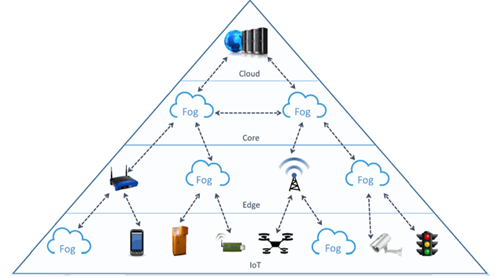

Articulos de la computacion
- Procedimiento para la implementación de la computación en la niebla en ciudades inteligentes
- La computación uno a uno: nuevas perspectivas
- Computación
Con el desarrollo de la Internet de las Cosas, el número de dispositivos conectados a Internet aumenta de forma exponencial, y ello trae consigo que crezcan enormemente la cantidad de datos a procesar en la nube, con un incremento considerable del tráfico, en detrimento de la calidad del servicio. Esto, unido a los requerimientos de baja latencia y movilidad de no pocas aplicaciones Web, ha provocado que aparezcan variantes de computación que se encuentren más cercanas a los dispositivos de la red. La Computación en la niebla (Fog computing) surge como un nuevo paradigma para dar solución a las problemáticas planteadas, con una extensión de la arquitectura tradicional de la computación en la nube hasta el borde de la red.
Las iniciativas uno a uno han hecho posible que cerca de dos millones de computadoras portátiles hayan sido distribuidas a niños en diversos países iberoamericanos con fines educativos, sociales y económicos. A pesar de lo significativo de las inversiones no es posible por ahora evaluar los impactos de dichas iniciativas y sacar conclusiones. Esto podría deberse a una variedad de factores, tales como la brevedad de los plazos para la implementación, la falta de metas claras y de compromiso para estudiar el impacto, así como la escasez de herramientas de medición.

La computación o informática es la ciencia encargada de estudiar los sistemas automatizados de gestión de información, esto es, las computadoras. Su nombre proviene del latín computatio, que significa “cálculo” o “cómputo”, ya que estos sistemas se fundamentan en su capacidad para resolver operaciones de tipo lógico a gran velocidad.